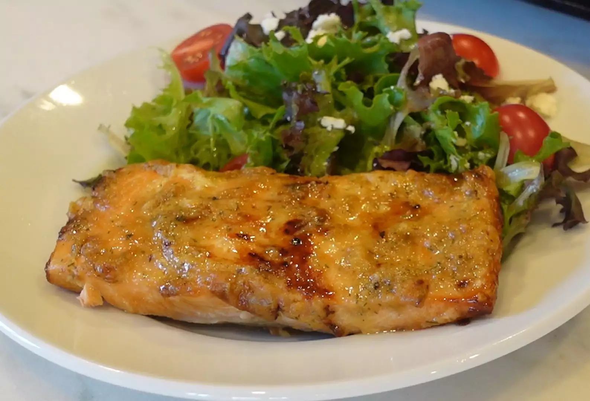

Air-Fried Frozen Salmon Recipe

Description
From your freezer to dinner plates, these flaky, moist, and tender air-fried salmon fillets are ready in just about 15 minutes!
Ingredients
- cooking spray
- 2 tablespoons Dijon mustard
- 1 tablespoon honey
- ½ teaspoon balsamic vinegar
- 1 clove garlic, minced
- ½ teaspoon kosher salt
- ¼ teaspoon ground black pepper
- 2 (6 ounce) frozen salmon fillets
Steps
- Preheat the oven to 390 degrees F (190 degrees C). Spray the air fryer basket with cooking spray.
- Mix Dijon, honey, balsamic vinegar, garlic, salt, and pepper together in a small bowl.
- Place frozen salmon fillets in the prepared air fryer basket. Place in the preheated air fryer and cook for 5 minutes.
- Brush Dijon mixture over the fillets and continue to air-fry until fish flakes easily with a fork, about 5 more minutes.
Back to Home